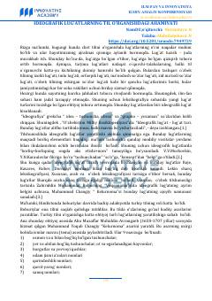

ILIdeografik lug'atlarning til o'rganishdagi o'rni va tarixiy asoslari haqida ilmiy maqola.
Ushbu maqolada ideografik lug'atlarning til o'rganishdagi o'rni, leksikografiya sohasidagi ahamiyati va tarixiy ildizlari yoritilgan. Shuningdek, o'zbek tilshunosligida mavzuiy-ideografik lug'atlarning ilk namunalaridan biri bo'lgan Muhammad Yoqub Changiyning "Kelurnoma" asari tahlil qilingan.